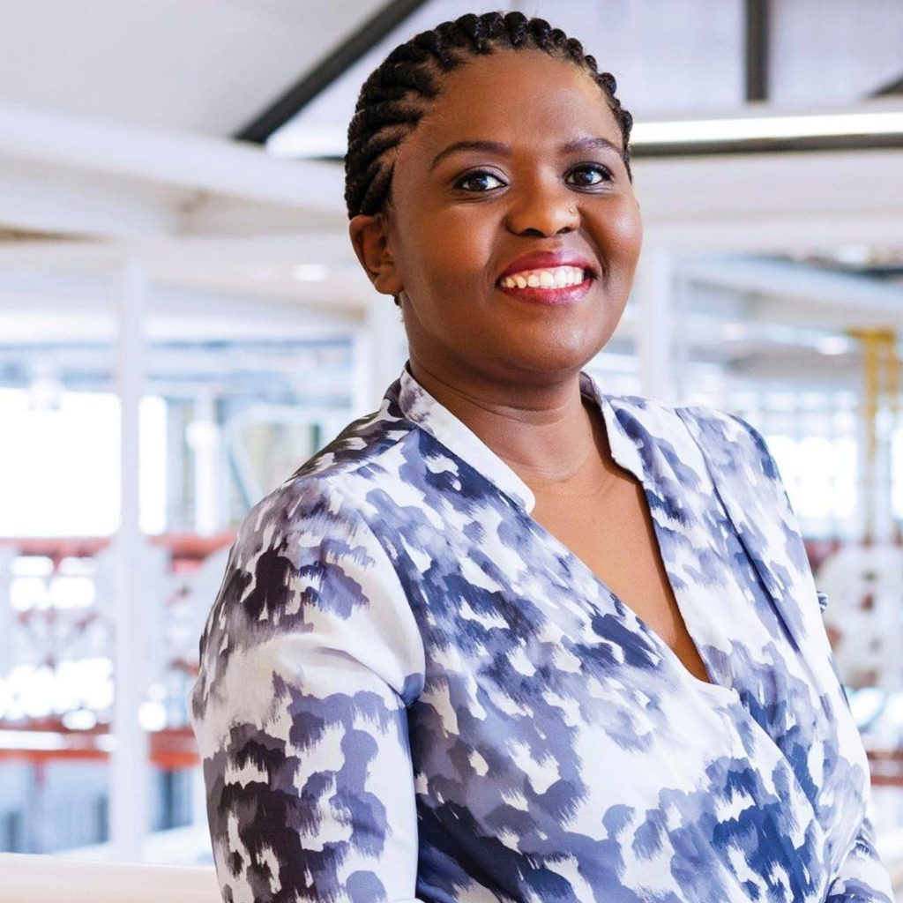
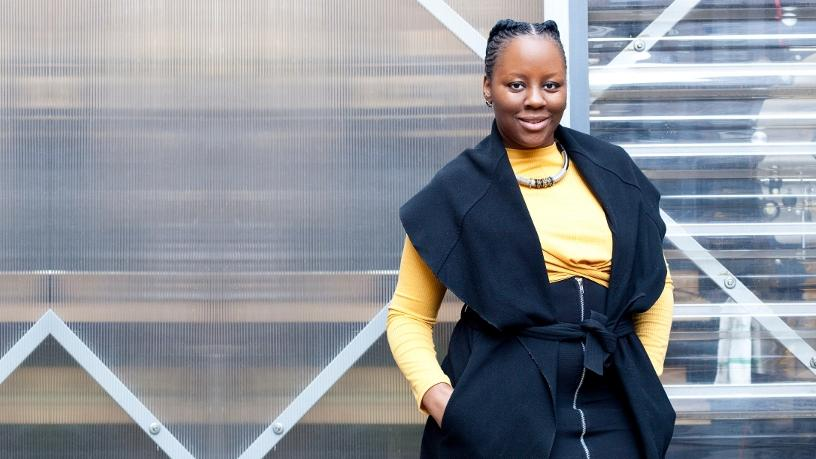

INTRODUCTION
Here are my top 3 Women I found inspiring as I researched about women who empower other women and girls in the world of Technology.
which makes a great impact in South Africa.
My Women of the month
Baratang Miya
FOUNDER & CE of GirkHype: Women in Code
Baratang Miya started coding Academy for Women and girls in disadvantaged communities in South Africa.
Her goal is to attract ,promote amd develop women and girls from underrepresented groups in the field of Social Science.
Emma Dicks
FOUNDER & DIRECTOR: CodeSpace Academy
Emma Dicks is also a founder of Code4ACT. A programme for young girls in High School
Emma has a particular interest in supporting young people in pursuing entrepreurial activities
Zandile Keebine
CHAIRPERSON:GirlCode
This is an organisation that impacts lives of young girls through various programmes
This organisation is to provide young girls and women with various opportunities like the annual all-female hackathon,monthly workshops and direct acess to women working in to ICT